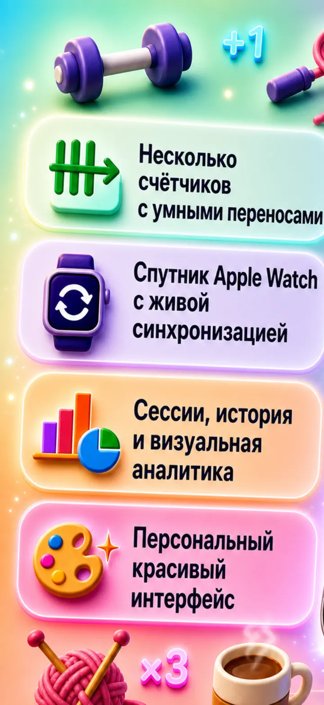
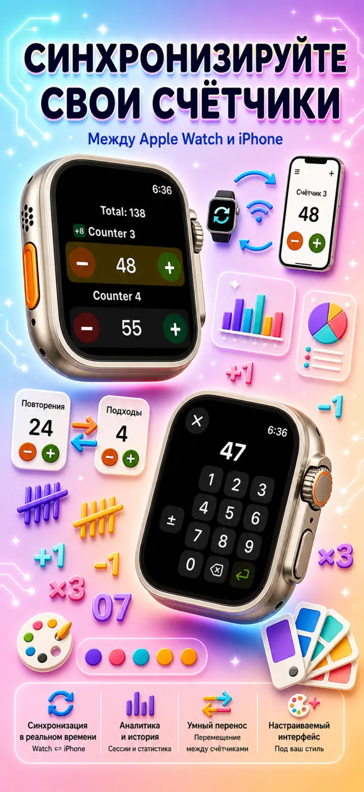
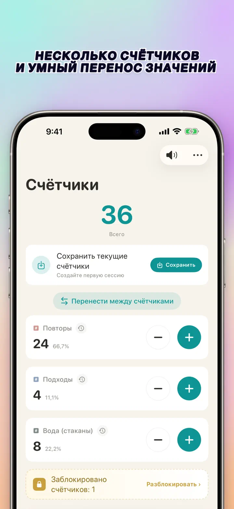
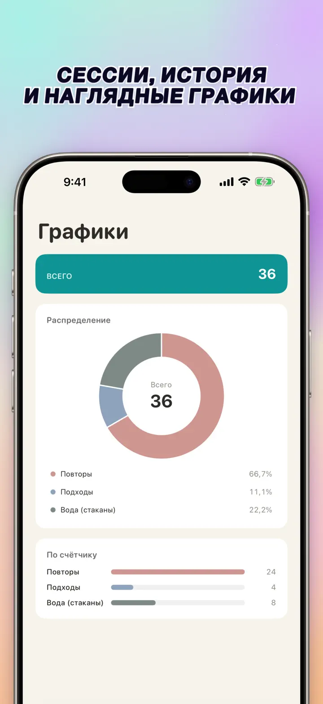
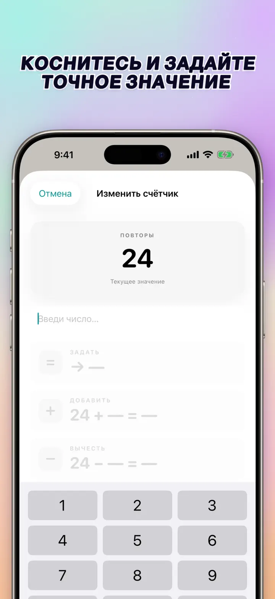
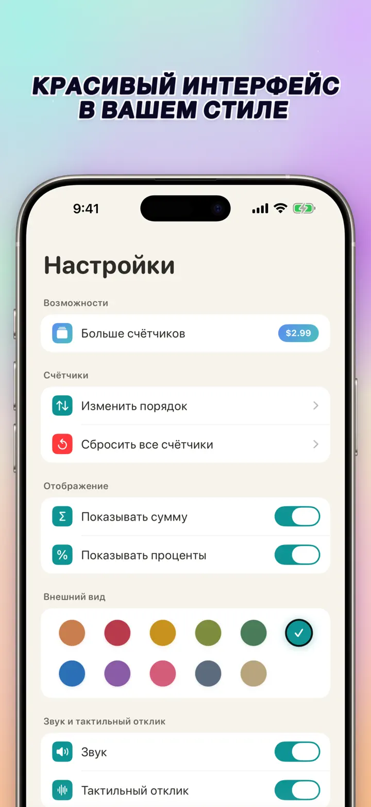
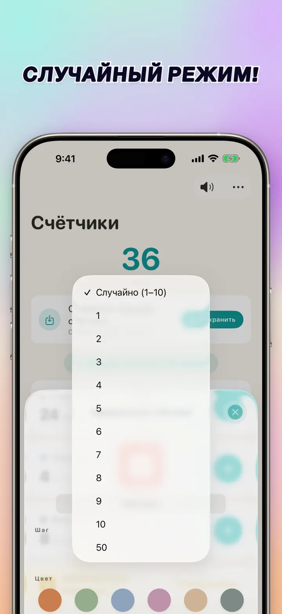

Счётчик 123
Watch-синхр., клики, очки
Новое: виджеты на экране «Домой» — нажимай +/- на виджете, не открывая приложение. Счётчик и кликер, синхронизация Apple Watch, случайный режим, графики, история.
Загрузить из App Store
О приложении
Счётчик 123 — быстрый, гибкий счётчик для iPhone, iPad и Apple Watch. Называй счётчики, выбирай цвет и считай всё что угодно — повторы в зале, ряды вязания, чётки, баллы на уроке, инвентарь, очки в играх. Все данные остаются локально на устройстве, работает офлайн.
НАСТРАИВАЕМЫЕ СЧЁТЧИКИ
- Создавай отдельные счётчики для занятий, игр, рутин или списков
- Индивидуальное имя и цвет для каждого
- Перетаскивай, чтобы менять порядок
- Удерживай, чтобы считать в быстром режиме
- Полностью офлайн — без регистрации, без облака
ПРЯМОЙ ВВОД И МАССОВЫЕ ОПЕРАЦИИ
- Коснись счётчика, чтобы сразу задать начальное значение — без сброса на ноль
- Массовое +/-: меняй счётчик на любое число одним касанием
- Перенос: перемещай значение с одного счётчика на другой без двойных операций
- Свой шаг: одно касание добавляет 1, 5, 10, 100 или любое число
- Живой предпросмотр каждого изменения
СЛУЧАЙНЫЙ РЕЖИМ
- Счётчик может выбирать новое значение от 1 до 10 при каждом нажатии
- Добавляй или вычитай случайные значения кнопками + и -
- Полезно для упражнений, игр, наград, занятий и тренировочных рутин
- Каждое случайное нажатие сохраняется в истории счётчика
ИТОГИ И ГРАФИКИ
- Общая сумма всех счётчиков с первого взгляда
- Режим процентов: вклад каждого счётчика в общий итог
- Интерактивная столбчатая диаграмма — переключай между значением (#) и процентами (%)
- Сортировка по значению для моментального рейтинга
ИСТОРИЯ И ОБМЕН
- Полная история изменений: каждое добавление, вычитание и правка
- Сохраняй наборы счётчиков и загружай их мгновенно
- Делись конфигурациями с командой, учениками или друзьями
- Смотри историю как журнал по датам, сгруппированные сессии или статистику день/неделя/месяц
ЖИВАЯ СИНХРОНИЗАЦИЯ С APPLE WATCH
- Измени счётчик на iPhone или Apple Watch — оба устройства останутся синхронизированы
- Полноценное нативное watchOS-приложение — не оболочка-компаньон
- Имена, цвета и значения синхронизированы на запястье
- Коснись — посчитай, удерживай — повтор, прямо с часов
- Работает самостоятельно, когда iPhone не рядом
ДЛЯ iPhone, iPad И APPLE WATCH
- Адаптивные макеты под любой размер экрана
- iPad показывает больше счётчиков сразу, поддерживается Split View
- Приватность в приоритете: локальное хранение, без облака, без аккаунта
ПОДХОДИТ ДЛЯ
- Повторы и подходы в зале
- Ряды вязания и петли крючком
- Чётки, тасбих, молитвенные бусы
- Баллы на уроке и перекличка
- Баскетбол, волейбол, гандбол — быстрый счёт
- Настольный теннис
- Инвентарь и подсчёт складских остатков
- Настольные игры, карты, преферанс, дурак
- Бассейн и беговые круги
- Наблюдение за птицами
- Подсчёт посетителей на событиях
- Трекинг привычек и целей
Скачай Счётчик 123, и каждый подсчёт станет простым — ясно, быстро, приватно.
Политика конфиденциальности: https://masawata.net/privacy-policy.html Условия использования: https://www.apple.com/legal/internet-services/itunes/dev/stdeula/
Снимки экрана






Счётчик 123
Новое: виджеты на экране «Домой» — нажимай +/- на виджете, не открывая приложение. Счётчик и кликер, синхронизация Apple Watch, случайный режим, графики, история.
Загрузить из App Store